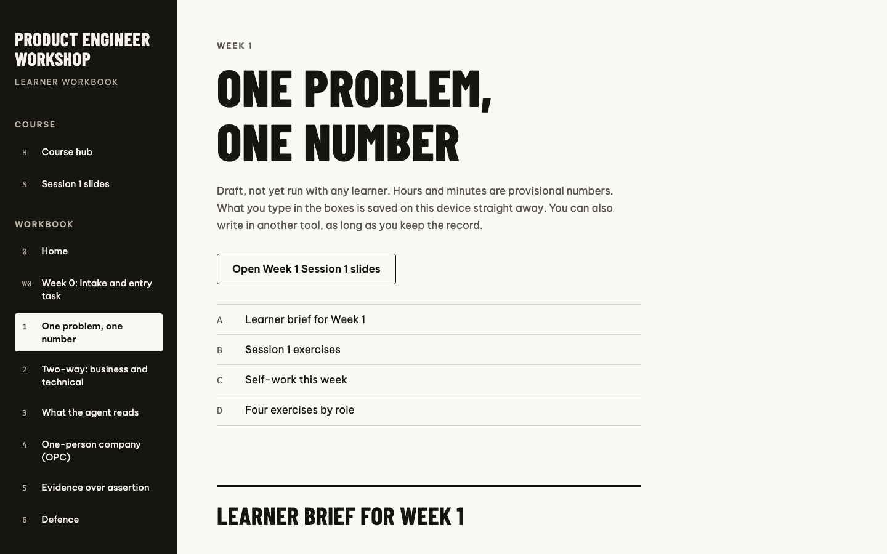
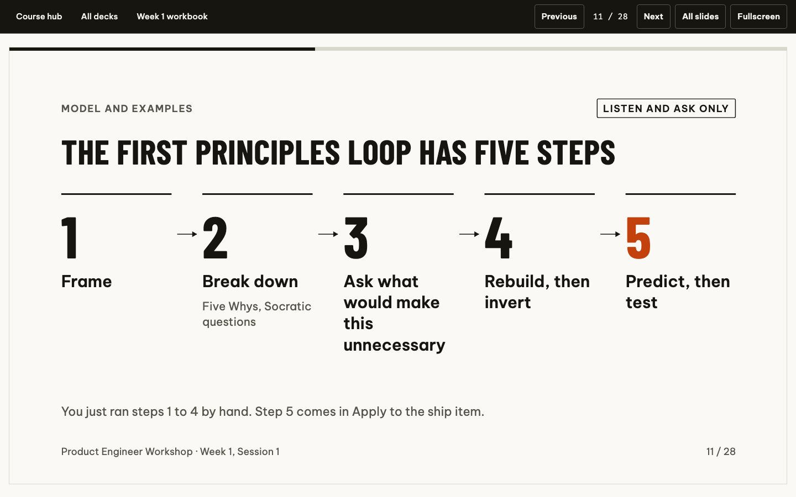
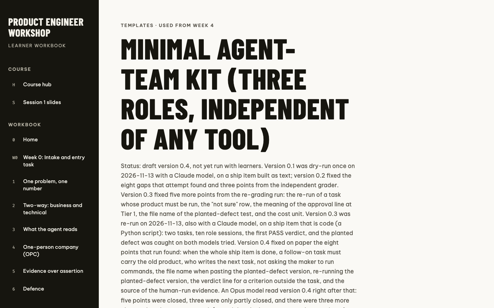

Ship one measured change into the work you already do in six weeks.
Six-week Product Engineer cohort for employed developers, designers, and QA: one real ship item, before-and-after numbers, workbook, and slides.

Course curriculum and learner materials
Every week moves one real ship item forward by one milestone and adds one layer to your agentic system. Open the workbook page or the Session 1 slide deck directly from any row.
- W0 Before Week 1: Entry task MilestoneIntake interview preparation, two candidate problems, manager note Agentic systemNone yet
- W1 One problem, one number MilestoneProblem frame; candidate number Agentic systemPersonal working rules
- W2 Two-way: business and technical MilestoneSettle the number, start measuring the baseline window; spec with acceptance criteria Agentic systemSpec as input for the agent
- W3 What the agent reads MilestoneOntology for the work area; first part of the ship item is built Agentic systemOntology, first skill, maker agent
- W4 One-person company (OPC) MilestoneFirst version that passes a grader agent against the acceptance criteria Agentic systemThree-role team: coordinator, maker, grader; self-triggered schedule
- W5 Evidence over assertion MilestonePasses the gate, goes to 1 or 2 colleagues, then ships to real users Agentic systemGate that can go red, one routine
- W6 Defence MilestoneShip deadline; oral defence (plus re-measure 2 to 4 weeks later) Agentic systemLessons turned into automatic checks
Templates
- K Agent-team kit Three separated roles (coordinator, maker, grader), hand-off file format, authority tiers, and planted-defect test. Used from Week 4.
- P Case-study permission letter Template for requesting manager or legal approval to share a sanitised case study publicly. Used in Week 6.
Course facts register
- Repository
- jangtrinh/product-engineer-workshop
- For whom
- Employed developers, designers, and QA with a real product, internal tool, or workflow to ship into
- Cadence
- 6 study weeks (2 live 2-hour sessions plus provisional self-work per week) plus 1 re-measure defence 2 to 4 weeks later; max 5 learners per cohort
- Core method
- First Principles Loop plus four pillars (two-way thinking, ontology engineering, OPC management, multi-agent team)
- Telemetry and data
- Zero tracking; workbook inputs stay in local browser
localStorageand export as Markdown - License
- Source-available under PolyForm Shield 1.0.0 (free to use for learning and work; no resale or competing course)
How learners work each week
-
1
Complete the Week 0 entry task and manager note
Prepare two candidate problems from your current work with three downward Whys (no AI), then send the manager note in Week 0 workbook so your workplace scope is clear before Session 1.
-
2
Run Session 1 paper-first, then challenge AI drafts
Spend the opening 20 minutes breaking down and rebuilding on paper without AI, compare your facts against the model and worked examples, and apply the concept to your ship item with any AI tool your company permits.
-
3
Measure numbers, build the 3-role kit, and defend evidence
Track baseline and after windows on your ship item, run the three-role system in Agent-team kit from Week 4, and defend raw logs and live checks in Session 2 peer grading and the post-course re-measure.
Method, four pillars, and scope boundaries
First Principles Loop
- Frame. State the problem in one sentence, with an observable success test.
- Break down. Ask why repeatedly and use the six types of Socratic question until you reach what cannot be broken down further, separating certain facts from assumptions.
- Ask what would make this unnecessary. If there is an answer, the problem has changed.
- Rebuild. Build the solution only from what is certain, then invert: how could this solution fail.
- Predict, then test. Write down the prediction before you act, and run the cheapest test that could disprove it.
Four content pillars
- Two-way product thinking. Walk down from business goal to technical decision and back up through measured baseline and after numbers.
- Ontology engineering. Define the things, named relations, and source of truth an agent reads before acting.
- Management for running agentic AI. Apply unit economics, information stewardship, authority tiers, and internal control gates to your own workflow.
- Build your own agentic system. Add working rules, spec, ontology and skill, three-role separation, red-to-green gates, and automatic checks step by step.
Inside the learner workspace
Static HTML and vanilla CSS/JS with zero build step and zero server dependencies.
-
Interactive Learner Workbook
Covers Week 0 through Week 6 with role exercises, copyable Markdown sheets, and automatic local browser storage.
Open Week 1 workbook -

Session 1 Web Slide Decks
Six interactive 16:9 concept decks (174 slides total) with keyboard controls, slide grid overview, and sequential PDF print support.
Open Week 1 slide 11 -

Tool-Agnostic Agent-Team Kit
Three separated roles (coordinator, maker, grader), Markdown hand-off formats, approval tiers, and a planted-defect verification test.
Open Agent-team kit
Frequently asked questions
Who is the Product Engineer Workshop for?
It is for employed developers, designers, and QA engineers who already have a working craft and have authority to ship one real change into a product, internal tool, or workflow at work.
How much time does the six-week cohort take each week?
Each week includes two live 2-hour sessions (Session 1 for concepts and Session 2 for peer grading and unblocking) plus provisional self-work estimates of 3 to 12 hours depending on the week, followed by one re-measure defence 2 to 4 weeks after Week 6.
Which AI tools are required to complete the workbook and agent-team kit?
None. Your AI stack is free choice: you use any AI tool your company allows, and the three-role Agent-Team Kit works across any chat or agent window by passing Markdown hand-off files.
Does the workbook send telemetry or store learner data on a server?
No. There is zero tracking and no server backend. Everything you type in the workbook stays in your local browser localStorage and can be copied or exported as Markdown.
What license governs the workshop materials?
All public workshop materials are source-available under the PolyForm Shield 1.0.0 license: free to use for learning and inside your work, with no resale or competing course products permitted.